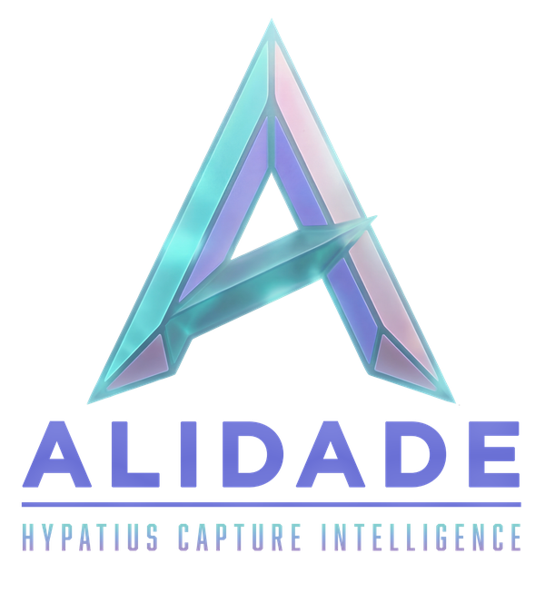
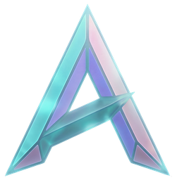

ALIDADE mobile · concept built
Agents work overnight. The phone is where a human signs — approve a connection request, release a report, hold an action. Ask a question out loud and the answer comes back as a dial, not a paragraph. Three destinations, not nine: the desktop HUD is for working a pursuit; the phone is for deciding one.
This is the first built version of the surface. It existed only as a written concept in the brand book; the live application ships an Expo client that the design system had never read. Screens below are the design-system position — reconcile the Expo client against them, not the other way round.
Pipeline agent wants to contact Partner B2F4-9XK for the Ring-B gap. Scope: capability, past performance. Withheld: pricing.
The morning briefing. Gates first, because a held action is the only thing that genuinely needs a person before coffee. Pursuits below, ranked, each carrying its band as a mark and a word — not a colour alone.

"Who else can build Ring-B buses inside eighteen months?"
The mark is the control. Hold it to speak; release to send. The listening ring is the single live element permitted anywhere in the system, and it stills completely under reduced-motion. Tool calls stream as they run — the answer is never a black box.
Four producers can deliver Ring-B buses. Only one fits inside eighteen months, and only on an OTA follow-on.
A bearing, not a paragraph. Three pathways on one arc with the needle on the recommendation, and the run ledger underneath so the answer can be taken apart. This is the brand's signature data-viz doing real work on the smallest surface it will ever run on.
A grant is a signed scope between tenants. It travels with every tool call, whatever client made it.
What you have given away, to whom, and when it expires — revocable from the phone. Violet throughout, because violet is the partner and consent accent and nothing else ever uses it.
The desktop HUD has nine surfaces because a capture manager works there all day. The phone has three because it exists for deciding, not working. Porting the nine-surface IA to a 390px viewport is the single most likely mistake.
The listening ring, and nothing else. No skeleton shimmer, no pulsing dots,
no animated counters. It stills entirely under prefers-reduced-motion.
On mobile the crystalline A is not decoration — it is the press target and the listening instrument. It is never recoloured and never given a solid fill; the teal glow is the only treatment.
A dial with a needle on the recommendation beats a paragraph on a phone held one-handed in a parking lot. Text is the fallback, not the default.
Every band carries its mark (▲ ● ■) and its word. A score read in sunlight through polarised lenses still resolves.
44×44pt minimum on every control including the gate buttons. An approval is the highest-consequence tap in the product; it does not get a small target.
Composite scenario data. No customer information appears. HYPATIUS, LLC · UEI UKELB3UV76V6 · CAGE 19S89